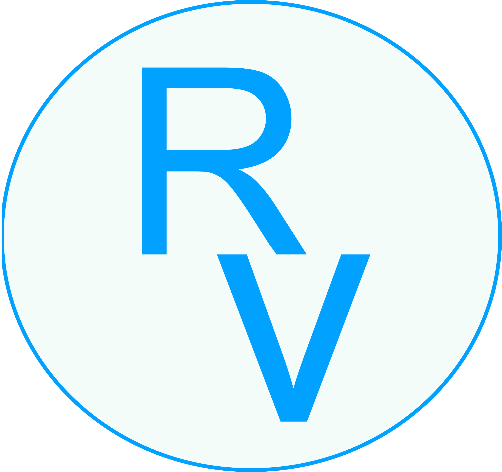

Raulin Vincent
Développeur web
contact
Email: war74@hotmail.fr
Tél: 06 98 40 46 98
Ville: La motte
Profil
Je suis passionné du monde informatique depuis tout jeune, ayant grandi avec l’évolution de ce
domaine, je me suis intéréssé d’abord au Hardware (compatibilité des pièces, montage et
installation), j’ai ensuite fait du montage vidéo, des créations de logo (2D et 3D) et je me suis
intéressé au langage informatique (HTML, CSS, JS), j’ai donc commencé en autodidacte à créer des
sites WEB pour comprendre le codage informatique et depuis c’est un sujet qui me passionne.